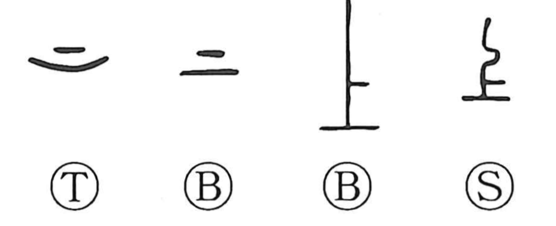

上

Kun: ue, uwa, kami, ageru, agaru, noboru, noboseru, nobosu | On: jo, sho
above ・ upper ・ top ・ to rise ・ to raise ・ superior
Explanation
上 began as a pointing sign. The early lower curve represents an upward-facing palm, with a small mark placed above it to indicate what is on or above the hand. 下 provides the counterpart, with a covering hand and a mark beneath.
As the forms became more linear, the reference shape and indicating mark developed into the modern strokes. Their relation carries the meaning: the marked position is above the supporting surface.
From that spatial relation come the top, an upper place, rising, and raising something. Applied to time, 上 can indicate an earlier period or the beginning. Applied to rank, it denotes a superior or sovereign and the acts of honouring or presenting something upward to such a person.